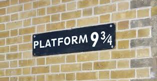

The ride on the Hogwarts Express starts from King's Cross railway station platform 9 3⁄4, which is hidden from view, and reached by walking through the barrier between platforms 9 and 10. Rowling discovered after the books were published that she had confused the layout of King's Cross with that of Euston station, and that platforms 9 and 10 at King's Cross were not the ones between which she had meant her magical platform to be placed.[43] There is no platform between lines 9 and 10 at King's Cross. To solve this, the filmmakers re-numbered platforms 4 and 5 for the duration of filming. In reality, at both King's Cross and Euston, platforms 9 and 10 are separated by railway lines. The exterior shots in the film are of the St Pancras Renaissance Hotel, which is part of St Pancras Station, adjacent to King's Cross station. From the outside St Pancras is much more visually dramatic than King's Cross.
